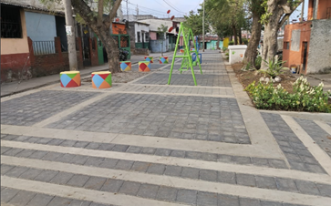
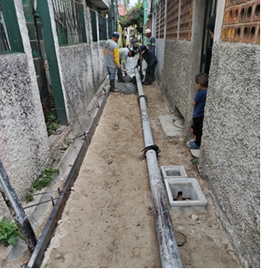

4 Supervisión en campo, mi experiencia como epesista
4.1 Resumen
Durante mi EPS en la Regencia Norte de la Municipalidad de Guatemala, en el área de Obra Urbana, supervisé proyectos en ejecución en el Distrito 3 de la Zona 18. Me encargué de verificar avances físicos, el cumplimiento de planos y cronogramas, y asegurar la calidad de ejecución, lo que incluyó visitas constantes, elaboración de informes y comunicación directa con cuadrillas y vecinos. Uno de los momentos más impactantes fue presenciar en acción la maquinaria pesada, lo cual enriqueció mi comprensión respecto del proceso constructivo. Además, enfrenté desafíos técnicos innovadores y desarrollé habilidades en liderazgo empático y comunicación efectiva; de esa manera consolidé conocimientos teóricos y prácticos para mi desenvolvimiento profesional.
4.2 Abstract
During my EPS at the Regencia Norte of the Municipality of Guatemala, within the urban works department, I supervised projects in District 3 of Zone 18. My responsibilities included verifying progress, ensuring that blueprints and schedules were followed, and maintaining constant communication with work crews and residents. Moreover, witnessing heavy machinery in action and addressing innovative technical solutions greatly enhanced my leadership, empathy, and communication skills, marking a significant milestone in my professional development.
4.4 Introducción
Desde el primer día, mi experiencia de realizar el EPS en la Regencia Norte de la Municipalidad de Guatemala se convirtió en la oportunidad perfecta para ver en acción lo que, a menudo, solo se estudia en teoría. Adentrarme en el Distrito 3 de la Zona 18, no solo me permitió supervisar proyectos en ejecución, sino también sumergirme en el dinamismo y los desafíos propios del trabajo en campo.
Este relato recoge el camino recorrido, en el que el control de avances, la verificación del cumplimiento de planos y cronogramas, y la supervisión del equipo humano se entrelazan para formar una experiencia inolvidable. Además, se destacan los aprendizajes diarios obtenidos a partir de la interacción directa con la maquinaria, los técnicos y, sobre todo, con la comunidad local, que transformó tanto la ciudad como mi formación profesional.
4.5 Artículo
Realicé mi EPS en la Regencia Norte de la Municipalidad de Guatemala, específicamente en el área de obra urbana. Aquí tuve la oportunidad y la responsabilidad de ejercer como supervisor de obra en algunos proyectos en ejecución en el Distrito 3 de la Zona 18 de la ciudad.
Esta experiencia permitió involucrarme de forma directa en el control y seguimiento de obras, verificando avances físicos, el cumplimiento de planos, cronogramas y la calidad de ejecución. Mi responsabilidad consistía en asegurarme de que cada proyecto se desarrollara conforme a lo planificado, lo cual implicaba visitas frecuentes al sitio, la elaboración de informes, la toma de evidencias fotográficas y, sobre todo, una constante interacción con las cuadrillas de trabajo y los vecinos del área.
Uno de los momentos que más me marcó fue ver por primera vez cómo opera la maquinaria en campo. En la universidad, muchas veces solo se ven imágenes o diagramas, pero presenciar en persona el funcionamiento real de equipos como retroexcavadoras, mezcladoras, bombas de concreto o camiones de volteo me permitió apreciar con mayor intensidad el trabajo que hay detrás de cada etapa constructiva.
También viví experiencias específicas que ampliaron mi visión como futuro profesional. Una de ellas fue la fundición de banquetas con concreto premezclado en callejones de difícil acceso. En este caso, el concreto fue bombeado a través de una tubería especial, ya que no era posible utilizar métodos convencionales. Esta solución técnica, pocas veces mencionada durante la carrera, me sorprendió por su ingenio y eficacia. Otro caso memorable fue la construcción de un parque en una zona que, anteriormente, estaba llena de maleza y en ocasiones se utilizaba como basurero. Semana a semana fui testigo de cómo el espacio se transformaba, dándole un nuevo sentido al área y beneficiando directamente a los vecinos; ver su felicidad al recibir un espacio limpio, verde y seguro fue profundamente gratificante.
Figura 4.1: Parque construido
Nota. El parque fue construido en un área previamente degradada. Elaboración propia.
Figura 4.2: Banqueta de concreto premezclado fundida por medio de tubería
Nota. Fundición de banqueta en un callejón de difícil acceso. Elaboración propia.
Además de lo aprendido en terreno, otro aspecto que valoro profundamente fue la calidad de las relaciones que logré construir dentro de la municipalidad. Desde los ingenieros y técnicos del área hasta los trabajadores de las cuadrillas, encontré personas dispuestas a compartir sus conocimientos, experiencias y formas de enfrentar los retos del día a día. Estas interacciones me enseñaron que el trabajo en equipo y el respeto mutuo son esenciales para que un proyecto avance de forma ordenada y eficiente. Aprendí a escuchar diferentes propuestas y experiencias, colaborar en la resolución de problemas y, sobre todo, a reconocer el valor de cada persona en la ejecución de una obra, sin importar su rol.
Durante mi tiempo como supervisor también reflexioné sobre el tipo de carácter que se necesita para liderar en campo. En mi caso, me considero una persona calmada y comprensiva, y procuré en todo momento ser empático con las situaciones personales y laborales de los trabajadores de cuadrilla, comprendiendo que cada uno enfrenta realidades distintas fuera del trabajo. Esta actitud me permitió generar confianza y mantener una comunicación abierta, facilitando un ambiente de colaboración y respeto mutuo. Sin embargo, también observé otros estilos de supervisión, más estrictos o autoritarios, donde se privilegia la disciplina por encima de la empatía. Si bien cada estilo tiene sus ventajas según el contexto, creo firmemente que un liderazgo basado en la comprensión y el respeto puede generar mejores resultados a largo plazo. Supervisar no es solo dirigir tareas; también implica saber escuchar, adaptarse y liderar con humanidad.
Ser epesista y, al mismo tiempo, ejercer funciones de supervisión fue un reto y a la vez una oportunidad única. Pude poner en práctica los conocimientos adquiridos en la universidad y desarrollar habilidades que difícilmente se enseñan en el aula: liderazgo, comunicación efectiva, adaptación al cambio y gestión del tiempo. Esta etapa marcó un antes y un después en mi formación profesional.
4.6 Conclusiones
Mi experiencia durante el periodo que duró el EPS me permitió consolidar lo aprendido en la universidad y aplicarlo en el campo, desarrollando habilidades técnicas como el control y seguimiento de obras, destrezas prácticas en la supervisión de maquinaria y manejo de desafíos de ejecución. Esta etapa evidenció que, para alcanzar buenos resultados en proyectos de obra urbana, es fundamental una combinación equilibrada de conocimientos teóricos y habilidades prácticas, permitiéndome enfrentar de manera efectiva los retos del terreno.
La interacción constante con ingenieros, técnicos, cuadrillas y la comunidad, reforzó la idea de que el liderazgo en campo va más allá de la simple dirección de tareas; implica una comunicación abierta, empatía y la capacidad de adaptar el estilo de supervisión a las necesidades reales del equipo y del proyecto. Este enfoque no solo favoreció el cumplimiento de los objetivos técnicos, sino que también propició un ambiente de colaboración y respeto, marcando un hito significativo en mi crecimiento profesional y personal.
4.7 Referencia
- [1] Forbes Argentina. (2022, 27 abril). Qué es el “liderazgo empático” y cuáles son sus beneficios. https://www.forbesargentina.com/liderazgo/que-liderazgo-empatico-cuales-son-sus-beneficios-n15335